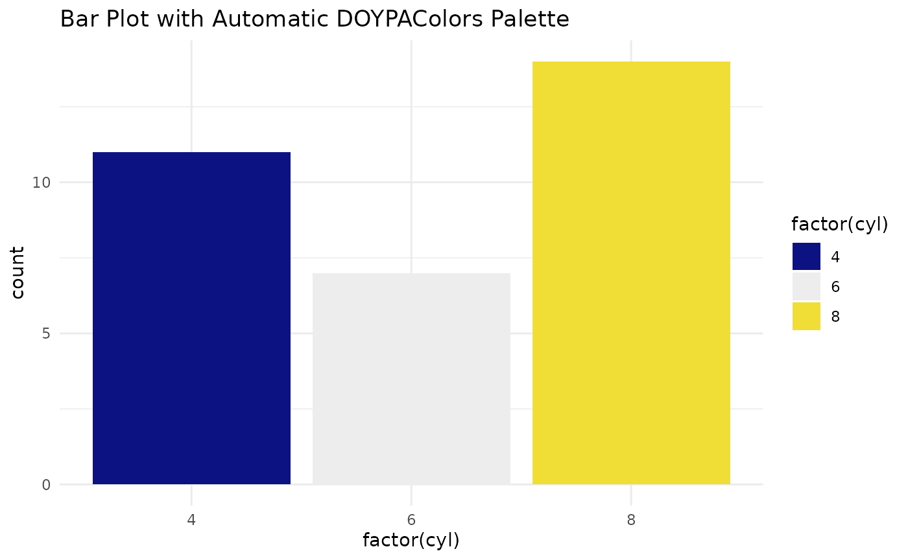
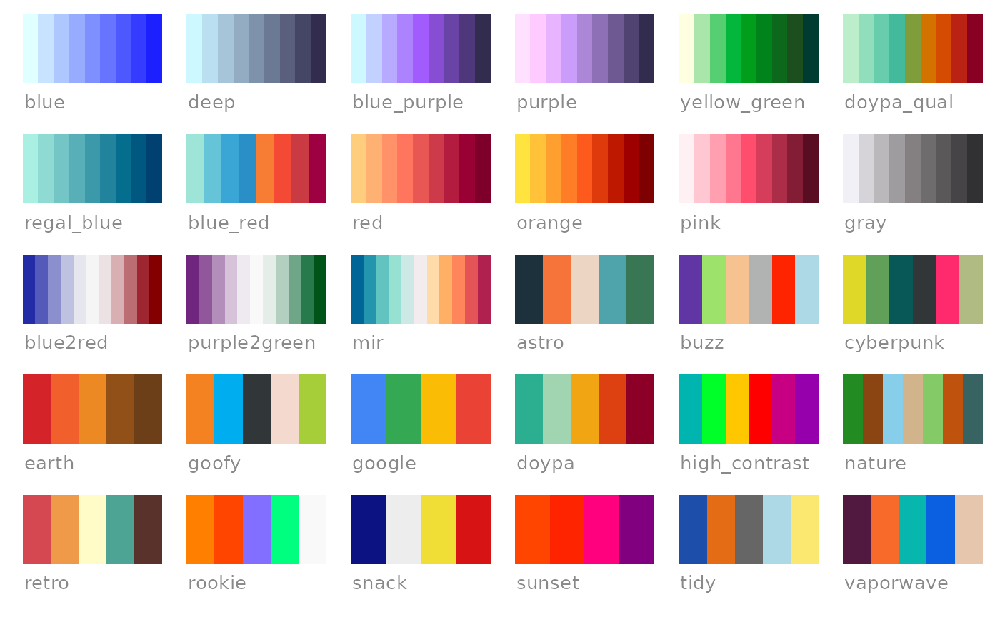
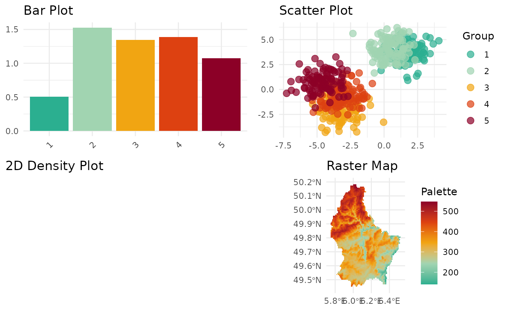
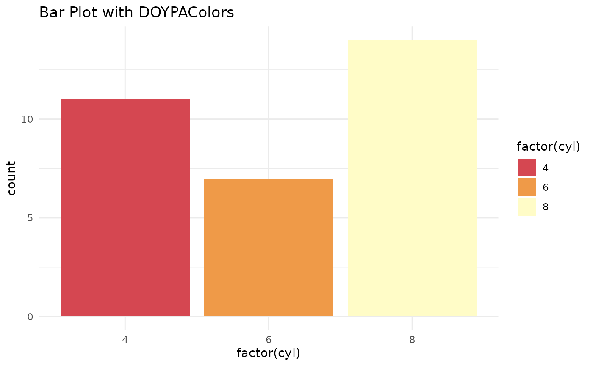
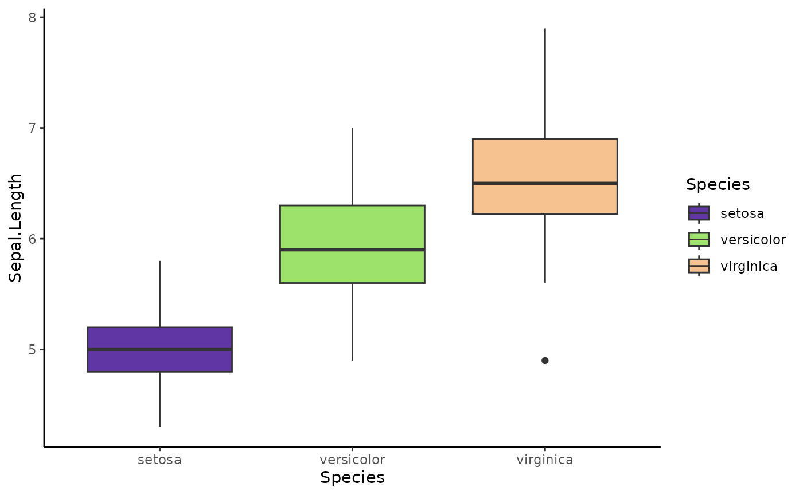
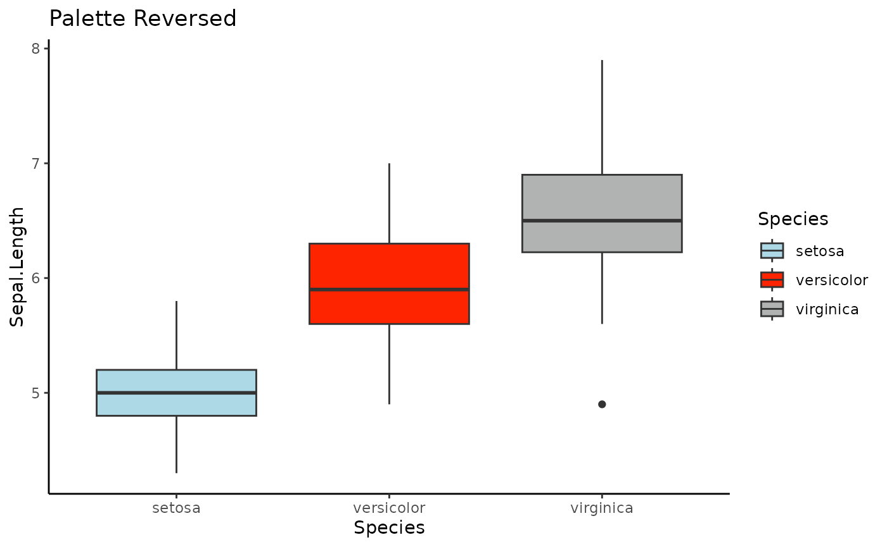
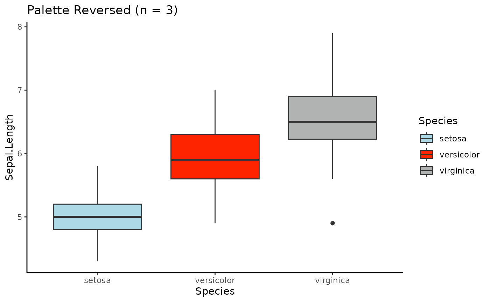
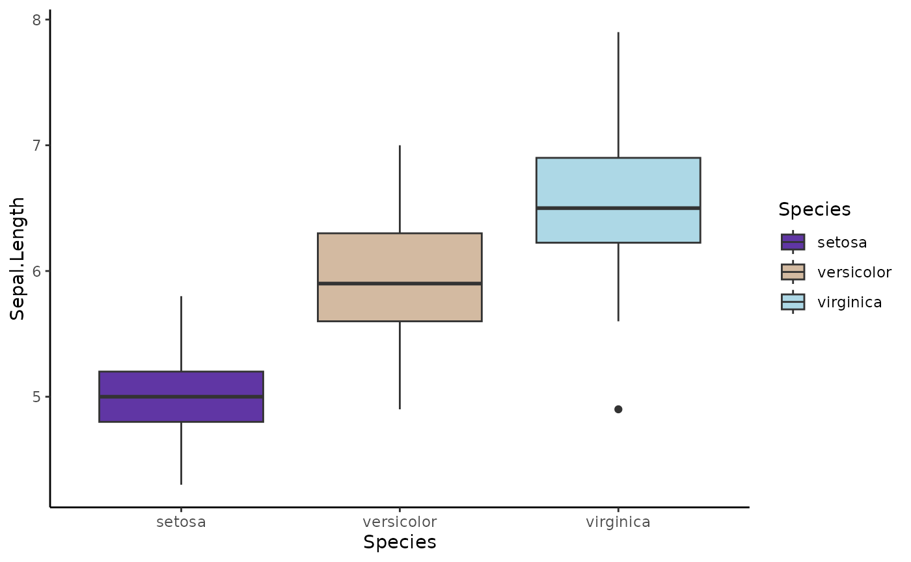

Overview
The DOYPAColors package offers a variety of color
palettes designed to enhance your data visualizations in R. These
palettes are compatible with ggplot2 and are categorized
into three main types: sequential,
diverging, and qualitative. The
package also includes a section of colorblind-friendly palettes. This
vignette provides a quick guide on how to use the package, including how
to list available palettes, preview them, and apply them to your
plots.
Installation
To get started with DOYPAColors, you can install the
package from CRAN:
install.packages("DOYPAColors")
library(DOYPAColors)Or you can install the development version from GitHub:
if (!require("devtools"))
install.packages("devtools")
devtools::install_github("jmestret/DOYPAColors")
library(DOYPAColors)How to Use
DOYPAColors is designed to simplify the process of
selecting color palettes for your plots. You can quickly apply a palette
without overthinking the details by using the doypa()
function to automatically choose a palette that fits the type you need,
and then use scale_fill_doypa() or
scale_color_doypa() in your ggplot2 plots.
Basic Usage with Automatic Palette Selection
Simply specify the type of palette you want (seq,
div, qual) and let DOYPAColors
handle the rest. For example:
library(ggplot2)
# Plot using automatic palette selection
ggplot(mtcars, aes(x = factor(cyl), fill = factor(cyl))) +
geom_bar() +
scale_fill_doypa(type = "qual", discrete = TRUE) +
theme_minimal() +
labs(title = "Bar Plot with Automatic DOYPAColors Palette")
#> We've handpicked the exciting 'snack' palette for you - no overthinking required!
In this example, scale_fill_doypa(type = "qual")
automatically selects a qualitative palette suitable for the number of
categories in your data.
For additional options and customization, refer to the rest of this vignette.
Exploring Palettes
Listing Available Palettes
To view all available palettes, use the
list_doypa_pals() function:
# List all available DOYPAColors palettes
list_doypa_pals()
#> $sequential
#> [1] "blue" "deep" "blue_purple" "purple" "yellow_green"
#> [6] "doypa_qual" "regal_blue" "blue_red" "red" "orange"
#> [11] "pink" "gray"
#>
#> $diverging
#> [1] "blue2red" "purple2green" "mir"
#>
#> $qualitative
#> [1] "astro" "buzz" "cyberpunk" "earth"
#> [5] "goofy" "google" "doypa" "high_contrast"
#> [9] "nature" "retro" "rookie" "snack"
#> [13] "sunset" "tidy" "vaporwave"Previewing Palettes
You can preview all available palettes using the
preview_doypa_pals() function:
# Preview all available DOYPAColors palettes
preview_doypa_pals()
To preview a single palette with multiple plots, use the
preview_pal() function:
# Preview a specific DOYPAColors palette
preview_pal(palette = "doypa")
#> Warning: Computation failed in `stat_binhex()`.
#> Caused by error in `compute_group()`:
#> ! The package "hexbin" is required for `stat_bin_hex()`.
Getting Palette Colors
To retrieve a vector of colors from a specific palette, use the
doypa() function. You can specify the palette you want by
name, or simply call the function without arguments to get a default
palette. If you’re unsure which palette to use, let
DOYPAColors choose one for you:
# Retrieve colors from a specific palette
doypa_colors <- doypa(palette = "retro")
print(doypa_colors)
#> [1] "#D54751" "#EF9A48" "#FFFCC7" "#4DA394" "#59322B"
# Retrieve a default palette if no palette name is provided
default_palette_colors <- doypa()
#> Surprise! You've got the 'pink' palette ready to roll. Less thinking, more plotting!
print(default_palette_colors)
#> [1] "#fff0f3" "#ffc7d2" "#ff9fb0" "#ff768f" "#ff4d6d" "#d53d5a" "#ac2d48"
#> [8] "#821d35" "#580d22"In the first example, replace "retro" with the name of
the palette you want to use. If you omit the palette
argument, doypa() will return the colors of a default
palette.
Applying Palettes to ggplot2
Basic Usage
Integrate DOYPAColors palettes into your ggplot2 plots
using scale_fill_doypa() for fill aesthetics and
scale_color_doypa() for color aesthetics. Here’s an example
of how to apply a qualitative palette (type = "qual") to a
bar plot:
library(ggplot2)
# Create a bar plot with a DOYPAColors palette
ggplot(mtcars, aes(x = factor(cyl), fill = factor(cyl))) +
geom_bar() +
scale_fill_doypa(type = "qual", discrete = TRUE) +
theme_minimal() +
labs(title = "Bar Plot with DOYPAColors")
#> Surprise! You've got the 'nature' palette ready to roll. Less thinking, more plotting!
Using Palette Options
Number of Colors (n)
Specify the number of colors to use from the palette with the
n argument:
# Apply a palette with a specific number of colors
ggplot(iris, aes(x = Species, y = Sepal.Length, fill = Species)) +
geom_boxplot() +
scale_fill_doypa(palette = "buzz", n = 3, discrete = TRUE) +
theme_classic()
Reversing the Palette (reverse)
Reverse the color order with the reverse argument:
ggplot(iris, aes(x = Species, y = Sepal.Length, fill = Species)) +
geom_boxplot() +
scale_fill_doypa(palette = "buzz", reverse = TRUE, discrete = TRUE) +
theme_classic() +
ggtitle("Palette Reversed")
ggplot(iris, aes(x = Species, y = Sepal.Length, fill = Species)) +
geom_boxplot() +
scale_fill_doypa(palette = "buzz", n = 3, reverse = TRUE, discrete = TRUE) +
theme_classic() +
ggtitle("Palette Reversed (n = 3)")
Creating a Color Gradient (gradient)
Generate a color gradient that interpolates between the colors of the selected palette:
ggplot(iris, aes(x = Species, y = Sepal.Length, fill = Species)) +
geom_boxplot() +
scale_fill_doypa(palette = "buzz", gradient = TRUE, discrete = TRUE) +
theme_classic()
Conclusion
The DOYPAColors package makes it easy to apply diverse
and visually appealing color palettes to your data visualizations. With
options to list, preview, and customize palettes, you have the
flexibility to enhance your plots and make them more engaging. Explore
the various palettes and options to find the perfect fit for your
data.